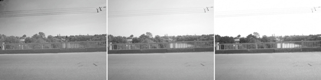
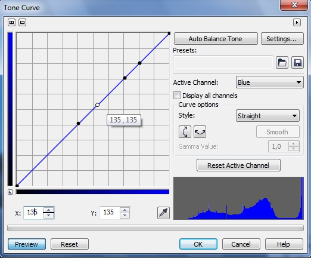
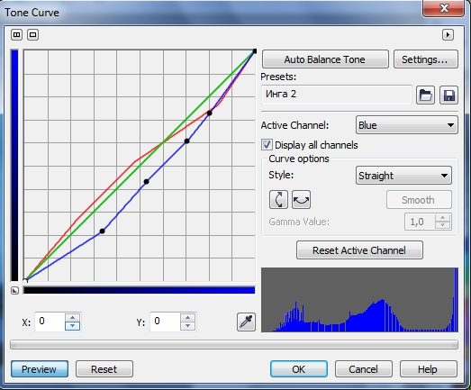
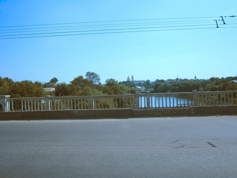
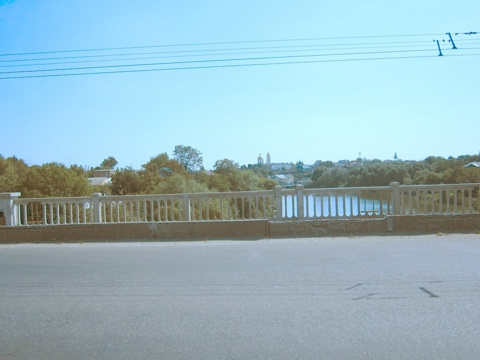
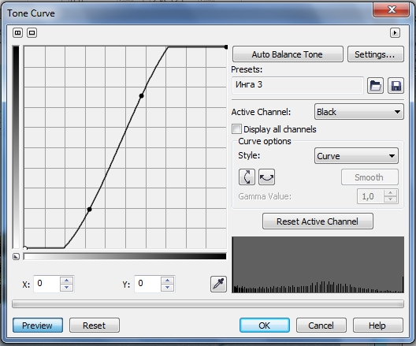
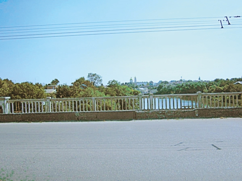

Избыток синего
Инга / 07.09.2012, 19:11/00:41
Форум:
Версия программы:
16.1.0.843 (sp1)
Подскажите, пожалуйста, на конкретном примере, как привести фотографию в нормальный вид. В архиве фотография с избытком синего цвета. Моя попытка Adjust->Color Balance убрать синий - не дает нормального результата.
Какие наиболее правильные шаги надо предпринять, чтобы фотография выглядела нормально?
Спасибо.

Итак, у нас конкретная, реальная фотография, имеющая не такой уж редкий случай отклонения от нормы. Давайте немного проанализируем эту фотографию. Попытка слету ее исправить каким-либо фильтром хорошего результата не даст, как нам бы того хотелось. Т. к. основная масса информации находится на большом расстоянии, резкости нам не хватает, и нет ничего такого, от чего мы могли бы легко оттолкнуться. Единственная зацепка – это асфальт. Мы заведомо знаем, что он темный и более или менее близок к нейтральному цвету, хотя небольшой синий оттенок возможен.
Кроме того, итак видно, что избыток синего есть везде. Но для старта лучше заглянуть в каналы (рис. 1).

Самым темным оказался красный канал (слева), а как и предполагалось, самый светлый – синий канал (справа). Для неба избыток синего не порок и в данной ситуации нам бы не хотелось там сильно что-то изменять, а в остальной части изображения с этим надо бороться. Т. к. фильтры по большей части воздействуют на все изображение, то глобальная коррекция не совсем то, что хотелось бы. Поэтому начнем с нашей отправной точки – асфальта. Т. к. мы не были на месте съемки, мы можем только догадываться, какие были цвета на самом деле. Заглянув в докер Info и пройдясь Пипеткой по асфальту, видим, что значения R: 91-123; G: 87-155; B: 135-180. Становится очевидным, что значения B: примерно на 20-30 больше, чем нужно. Откорректировать эти значения в довольно узком диапазоне можно только с помощью Tone curve (Цветовая кривая). Вот давайте туда и обратимся. Откройте фильтр: Adjust > Tone Curve (Настройка > Цветовая кривая). В раскрывающемся списке Active Channel (Активный канал) выбираем Blue, а в списке Style (Стиль) выбираем Straight (Прямая). На кривой ставим точки с координатами 135 и 180 (рис. 2) и добавляем выше и ниже на кривой дополнительные точки, чтобы изменилась форма только нужного участка.

Меняем с помощью счетчика Y: значения с 135 на 111 в первой точке и с 180 на 154 во второй точке.
Однако, результат не получился достаточно хорошим, поэтому я уже интерактивно сместил нижнюю и верхнюю дополнительные точки. Также немного добавил яркости в красном канале (рис. 3).

Результат показан на рис. 4 (изображение уменьшено). Файл кривой в прикрепленных файлах.

Но результат пока еще не впечатляет. Изображение немного темновато и расплывчато. Надо его сделать светлее и я это сделал с помощью фильтра Gamma (Гамма). Выполните команду Adjust > Gamma (Настройка > Гамма) и установите в окне фильтра значение гаммы равным 1,53. Получится, как на рис. 5

Картинка стала заметно светлее, но выглядит плоско (невыразительно) нет желаемой резкости. Добавим резкости с помощью фильтра High Pass (Удаление мелких деталей). Но для его применения нужен объект. Для этого выделим все изображение, нажав Ctrl + A, а затем Ctrl + стрелка вверх, чтобы создать из маски объект. Выполните команду Effects > Sharpen > High Pass (Эффекты > Повышение резкости > Удаление мелких деталей). Установите значение Percentage (Процент) = 100, а значение Radius (Радиус) = 10.
В докере Objects (Объекты) выберите режим наложения Overlay (Перекрытие) и объедините объект с фоном (Ctrl + стрелка вниз). Получится, как на рис. 6.
Из-за уменьшения исходного изображения на 60 % (для размещения на сайте), увеличение резкости не сильно заметно. От заметного синего оттенка мы избавились, но потеряли контраст в деревьях и в районе перил тоже. Надо это исправить. Т. к. с помощью Tone curve (Цветовая кривая) это будет сделать на данном этапе сложновато, то используем фильтр Hue/Saturation/Lightness (Оттенок/Насыщенность/Яркость). В фильтре с помощью переключателя Channels (Каналы), переключитесь на Green (Зеленый) и установите значения: Hue (Оттенок) = 18; Saturation (Насыщенность) = 21; Lightness (Яркость) = -25. Затем переключитесь на канал Yellow (Желтый) и установите значения: Hue (Оттенок) = 7; Saturation (Насыщенность) = 8; Lightness (Яркость) = -11. Результат на рис. 7.
Теперь добавим «последний штрих». Но его сделать в пространстве RGB не так легко. Поэтому на всяк случай сделаем дубликат изображения, а потом конвертируем его в CMYK.
Изображение чуть затемнилось и стало более контрастно в тенях. Теперь воспользуемся тем преимуществом пространства CMYK, что с помощью черного канала можно лучше выявить детали. Выполните команду Adjust > Tone Curve (Настройка > Цветовая кривая), перейдите на черный канал и измените контраст (рис. 8) (файл кривой приложен).

Результат на рис. 9 (его пришлось перевести обратно в RGB для размещения на сайте, отчего он немного изменился).

Можете его оставить в CMYK, а можете перевести обратно в RGB. Конечно, вы можете на свой вкус устанавливать настройки в фильтрах, что-то сделать по-другому, но на скорую руку можно сделать и так. Я бы еще поменял тут и небо…
Я иду согласно того, что Вами написано написано. Как Вам удалось увидеть три черно белые изображения?
Windows->Dockers->Chanels не показывает того, что у вас. Можно чуть подробнее, что Вы делаете (нажатие клавиш и т.п.).
В докере Каналы, Вы и не увидите этого. Надо разбить изображение на каналы: Image > Split Channels to > RGB (Изображение > Разбить каналы на > RGB).
Спасибо. Все получилось. Для одной фотографии то, что нужно.
Правда от реальной задачи я отказалась. Мне дали 30 фотографий сделанных этим фотоаппаратом. Все с искажением в сторону синего цвета. Редактировать их таким подходом, заняло бы у меня слишком много времени. Числовые значения, как видно, надо тщательно и кропотливо подбирать. На 30 фотографий ушла бы неделя экскрементов, поэтому отказалась. Думала можно как-то проще. :)
Имхо проще через фильтр Color Balance, а уж про автоматизацию сего дела я молчу :)
Можно было бы и с Color Balance стартовать, но без дополнительных телодвижений не обошлось бы все равно. Да и гибкость у Color Balance поскромней, чем у Tone Curve :)
Не плохой результат дает игра в окне Adjust->Image Adjustment Lab. Однако все исключительно методом тыка, глубоко понимания, какие ползунки важнее в такой ситуации, нет. :)
Для обработки фото начинающим советую книгу Дэна Маргулиса по работе в LAB цветах. Свой вариант я сделал за 3 минуты, причем 2 - выделение неба. Делал, правда, в фотошопе, но сути не меняет, т. к. используются кривые и шарп. Над фото нужно, конечно, еще работать, но результат уже съедобный, имхо)
В общем получив эти фотографии снова. Нашла для себя такой подход:
1. Adjust->Color Balance
2. Доводка в Adjust->Image Adjustment Lab
Набив руку на первых нескольких фотографиях, заметила, что на все последующее уходило не более 30 секунд.
Страницы